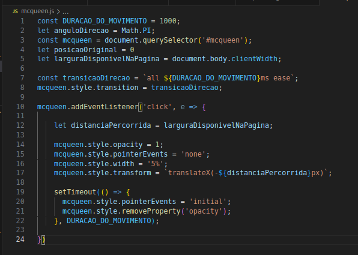
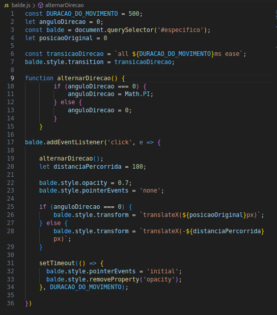
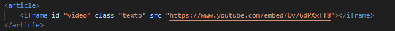
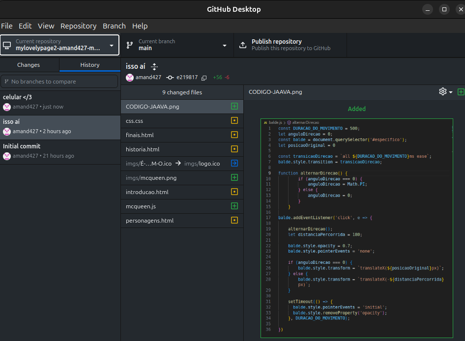
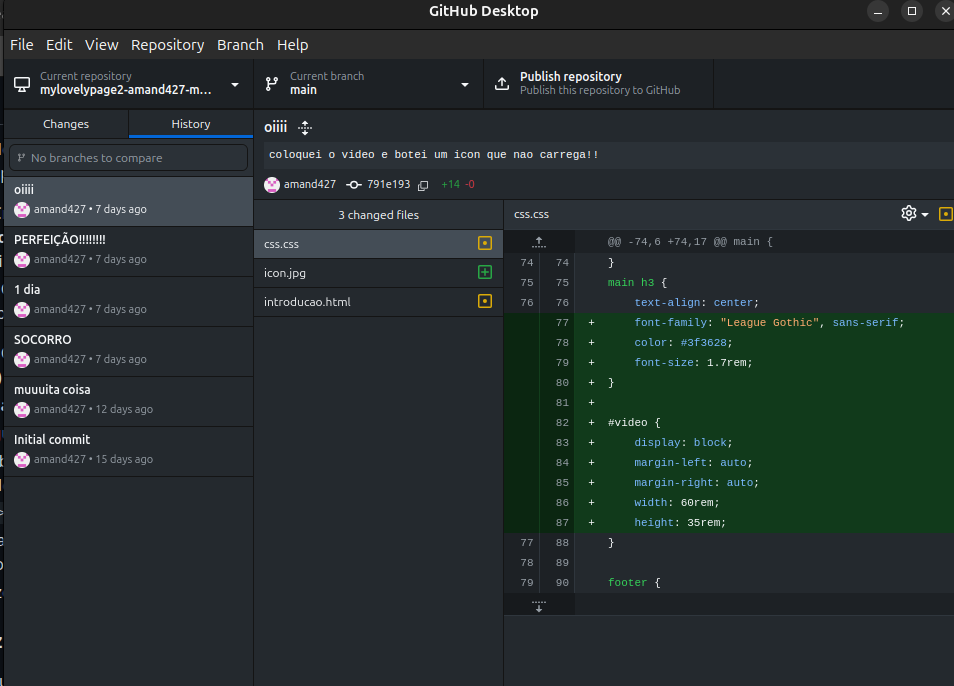

O site contém itens em JavaScript (presente na página "HIstória e Jogabilidade" e na página "Finais Possíveis") e vídeos inseridos, como o acima.
  O primeiro código refere-se ao movimento do Relâmpago McQueen - easter egg - ao ser clicado (ele corre até o final da página).
O segundo se refere ao movimento horizontal do Balde que, quando clicado, revela uma Estatueta de Stanley.
O terceiro se refere ao vídeo introdutório de lançamento do jogo The Stanley Parable: Ultra Deluxe.
O site também foi produzido utilizando o Git (GitHub Desktop), porém por mudanças constantes de aparelhos eletrônicos, nem todas as atualizações estão contidas no mesmo receptório e grande parte foi encaminhada ao receptório do My Lovely Page por facilitar a mudança entre aparelhos. O Git foi utilizado desde o início e re-início do site (tive q refazer ele inteiro dps :/ )
 